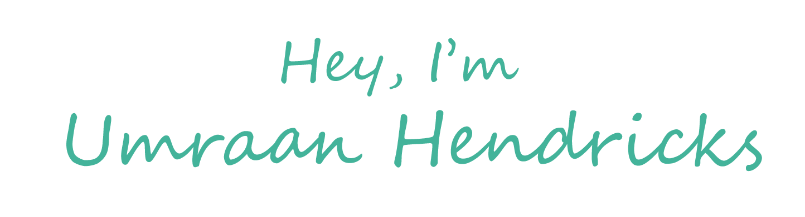
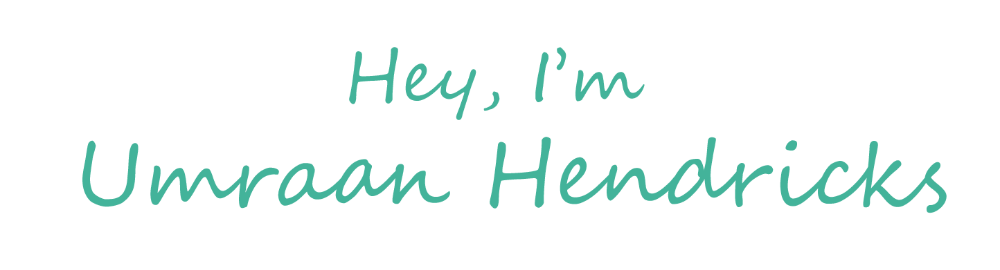
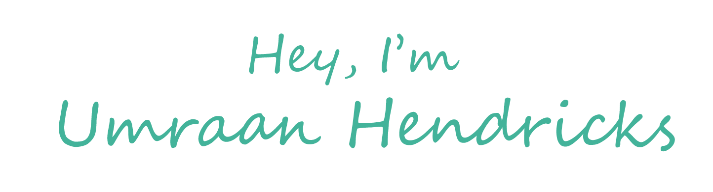
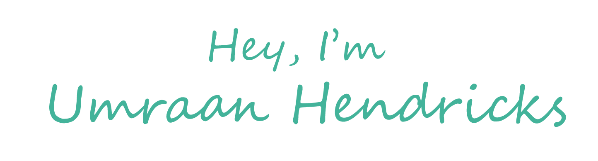

I am a Project Manager and Data Analyst, with a passion for learning new things and implementing them in beneficial ways.
Rheinmetall-Denel Munition provides me with the opportunity to oversee and manage development projects from initiation to closing. To date I have completed several large projects and I am currently managing multiple projects in parallel. It is here where I learnt to effectively manage stakeholder expecations as well as identify and mitigate potential project risk factors.

Plascon was my first taste of a corporate environment. I learnt a lot about work ethic and the social dynamic that the working environment presents. From my experience at Kansai Plascon, I learnt that being able to effectively manage relationships with colleagues was key to succesfully achieving objectives.

While teaching undergraduate students at UCT, I realised the importance of effective communication in transferring knowledge. Teaching also improved my ability to connect and empathise with others.
Pursuing the PMP certification improved my understanding of project management framework fundamentals as well as best practice techniques. I was able to identify bad habits that I had developed and was subsequently able to correct them accordingly. The PMP framework significantly improved my ability to function effectively as a project manager.

I was really fascinated by how businesses operate and wanted to understand the fundamentals of what characterises a succesful business. I was amazed by the complexities that exist within the business landspace and realised that there is definitley no "one-size-fits-all" solution. A clear vision and understanding of these complexities is required in order to navigate through all the volatility and uncertainty to succeed.
Ever since seeing Bill Nye "The Science Guy" on TV, I have always been fascinated with technology and science. My dream was to invent something that would benefit humanity, however when I grew up I realised how difficult that would really be. Nevertheless I try and learn new things every day and attempt to implement these things effectively in my life which includes my career.
© 2020 Umraan Hendricks.
Business vector created by vectorpouch - www.freepik.com